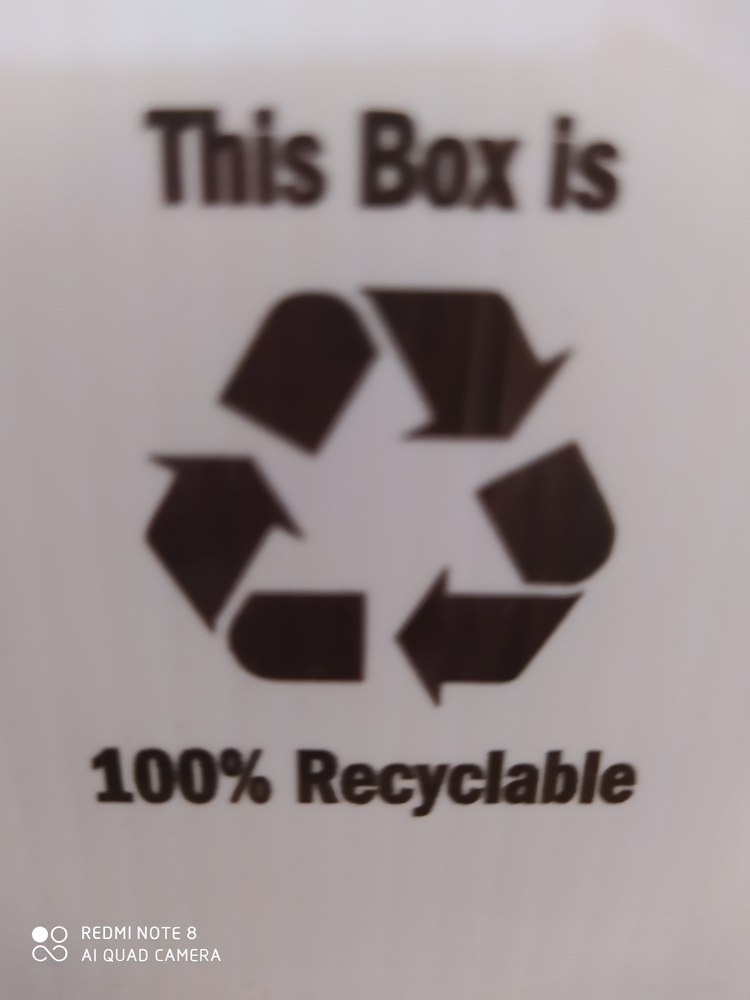
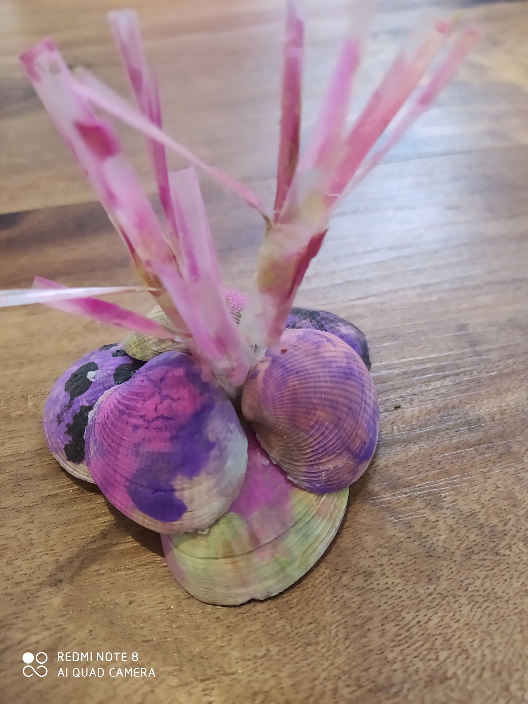

Gary Anderson invented the recycling logo. Recycle means that old materials become new materials! Recycling can help the land, and the ocean! We need to recycle so the earth won't suffer from pollution.
Any plastic that's already used, we can reuse them. Reuse means a used thing that can be used again! What I reused to make these anenomes is clams(for the base), and straws(for the anenomes!).
The garbage truck has this claw it uses grabs the garbage cans and dump them in. After the garbage claw dumps the garbage into the truck, it bring it to the dumpster. At the dumpster the garbage truck dumps the trash there.
So let's recycle to keep the earth healthy!